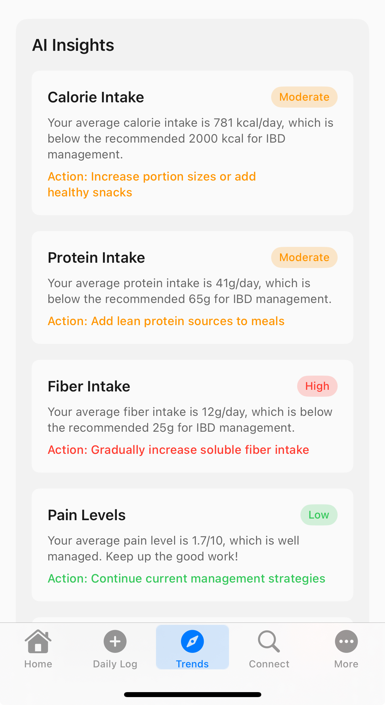
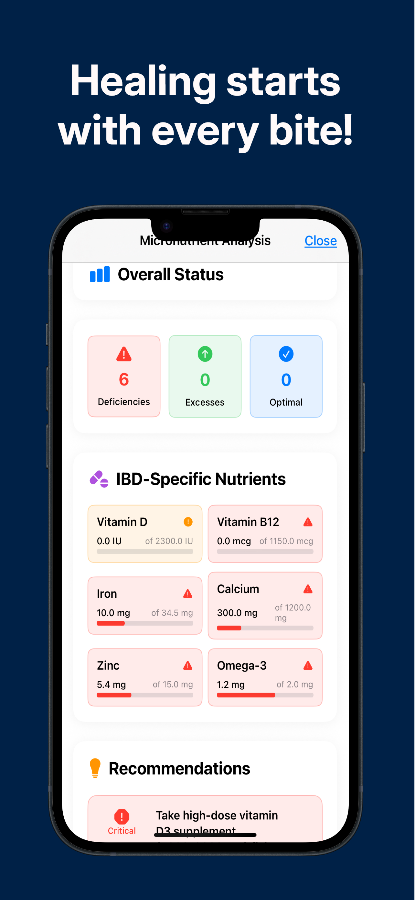
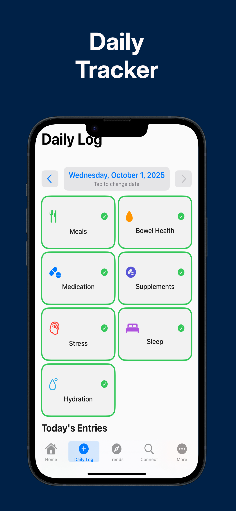
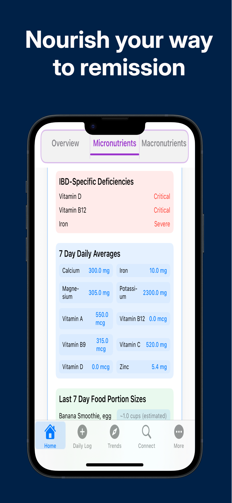
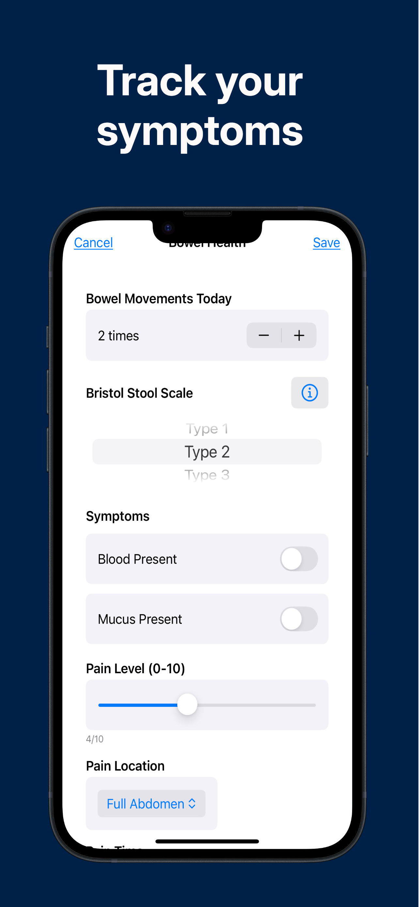
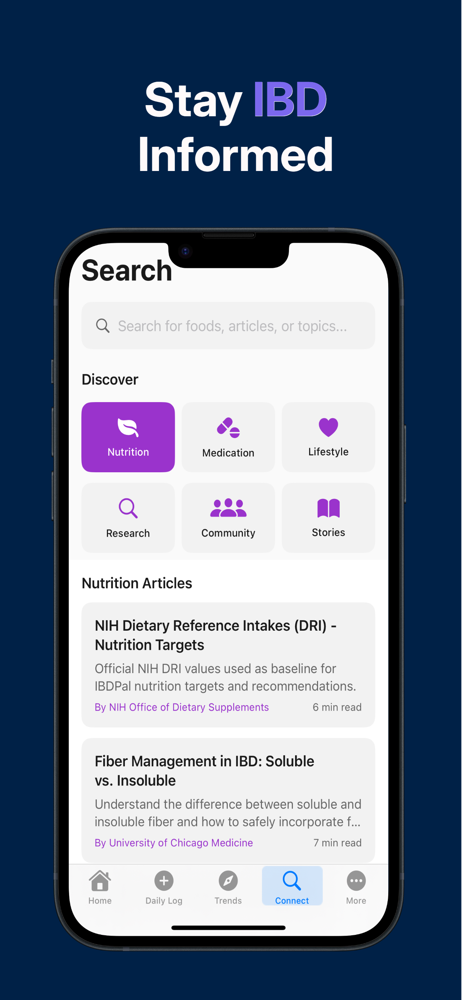

Complete nutritional intelligence
for your IBD journey
Track nutrients and micronutrients from daily foods
Available at App Store
Comprehensive Nutrient & Micronutrient Management Platform
IBDPal is a free iOS app built for IBD and Crohn's support—nutrition and symptom tracking, AI-assisted flare insights, and peer connection. Explore our support resource guide and U.S. community map for chapters, groups, and care centers.
Scan with your iPhone to download
App Store performance
Organic Discovery Metrics
Advanced IBD Management Capabilities
Intelligent Home Dashboard
Real-time nutrition scoring (0-100), micronutrient deficiency alerts, and personalized insights with immediate action recommendations for optimal IBD management
Comprehensive Daily Tracking
Advanced logging system for meals, symptoms, medications, bowel movements, pain levels, and hydration with IBD-specific tracking categories and severity scales
Machine Learning Analytics
AI-powered flare prediction using 3-month trend analysis, symptom correlation algorithms, and personalized risk assessment with early intervention recommendations
Stay Updated
Get the latest updates and features for IBDPal
Comprehensive IBD Management Features
AI-Powered Flare Risk Assessment
Advanced machine learning algorithms analyze your 3-month data trends to predict flare risk with early warning indicators, helping you take proactive steps to prevent disease exacerbations
Research-Based Nutrition Analysis
Comprehensive nutrition tracking with IBD-specific benchmarks, FODMAP compliance monitoring, and personalized recommendations based on peer-reviewed medical research
Micronutrient Deficiency Detection
Advanced deficiency analysis identifies vitamin and mineral gaps common in IBD patients, with targeted recommendations to address malnutrition and support healing
Comprehensive Daily Logging
Track meals, symptoms, medications, bowel health, and hydration with intuitive iOS interface designed specifically for IBD patient needs and symptom patterns
Trend Analysis & Insights
Visualize your health journey with interactive charts showing nutrition trends, symptom correlations, and progress tracking to identify patterns and improvements
Community Support
Connect with fellow IBD patients, share success stories, and access peer support through our integrated community platform for encouragement and shared experiences
Medication & Appointment Reminders
Set notifications for biologics, infusions, oral medications, and follow-up visits so doses and clinic days are less likely to slip during busy weeks
Clinic Visit Summaries
Export PDF or CSV summaries of nutrition, symptoms, and trends to share with your gastroenterologist—patient-entered data for shared decision-making
How IBDPal Works: Your Personalized IBD Journey
IBDPal empowers you with AI-driven insights and evidence-based nutrition strategies to manage your IBD condition effectively.

Track & Discover
Log your daily meals, symptoms, medications, and health metrics through our intuitive iOS interface. Our advanced AI algorithms analyze your 3-month data trends to discover trigger patterns, micronutrient deficiencies, and flare risk factors specific to your IBD diagnosis.

Optimize & Reduce
Receive personalized nutrition recommendations to optimize your diet and reduce flare risk. Our evidence-based system provides IBD-specific targets, FODMAP-compliant food suggestions, and micronutrient optimization strategies to help minimize symptoms and support healing.
Test & Verify
Systematically test foods during remission periods to verify their impact on your symptoms. Our comprehensive tracking system monitors your tolerance levels and provides data-driven insights to help you confidently expand your diet while maintaining symptom control.


Sustain & Evolve
Maintain your optimized nutrition plan with continuous monitoring and adaptive recommendations. Leverage visual trend analysis, AI-powered flare predictions, community support, and detailed health reports to work collaboratively with your care team for long-term IBD management success.
App Screenshots

Home Dashboard
Personalized nutrition overview with daily tracking and micronutrient analysis

Daily Logging
Comprehensive meal tracking with IBD-specific nutrition information

Micronutrient Analysis
Advanced deficiency tracking with personalized recommendations

AI-Powered Insights
Flare risk assessment and trend analysis for better health management

Community & Support
Connect with other IBD patients and share success stories
Medical Research Foundation
Evidence-Based Nutrition Standards
Built on peer-reviewed IBD research with specialized nutrition targets: lower fiber (20-25g vs 30g), higher protein (1.2-1.5g/kg vs 0.8g/kg), and FODMAP compliance for optimal IBD management
Clinical-Grade Analytics
Advanced algorithms correlate diet, symptoms, and flare risk using medical research data, providing healthcare providers with valuable insights for treatment optimization
Personalized Care Pathways
Individualized recommendations based on your specific IBD type, symptom patterns, and nutritional needs, reducing trial-and-error approaches to diet and lifestyle management
Patient Resource Library
Tools, articles, and trusted links for Crohn's disease and ulcerative colitis. Newly diagnosed? Start here.
Open full resource library page → · Visit prep checklist · Recursos en español
IBDPal Blog

First 48 Hours of an IBD Flare
A calm checklist for hydration, rest, and when to call your team.

Workplace & School Rights with IBD
ADA accommodations and 504 plans—education only.

Insurance & Biologics Overview
Prior auth, appeals, and questions for your clinic.

Living With an Ostomy
Gentle basics and peer support links.

Partner & Caregiver Guide
Supporting someone with IBD without taking over care.

Sleep and Rest During IBD Flares
Why slowing down supports recovery, and practical bedroom and pacing habits.

Stress, Mood, and IBD
Gentle coping tools, boundaries, and when to seek extra support.

Living With IBD as a Family
Helping kids feel normal, school plans, and caring for parents’ energy.

Understanding Biologics for IBD
A high-level, patient-friendly look at how biologics fit in IBD care.

Travel With IBD
Packing, food on the road, and building confidence for trips.

Low-Residue Diet During an IBD Flare
A practical lifestyle guide to gentler eating when symptoms flare.
Tracking Food & Symptoms With IBDPal
Why tracking matters, what to log, and how IBDPal supports clearer patterns with your care team.

Hydration Tips for Crohn’s Disease and Ulcerative Colitis
Why fluids matter, warning signs, and practical strategies for flares and remission.

How Nutrition Impacts Gut Health in IBD
Microbiome basics, gut-friendly foods, anti-inflammatory patterns, and personalized nutrition.

Foods That May Trigger Ulcerative Colitis Symptoms
Common triggers, why tracking helps, and balanced nutrition with your care team.

Best Foods to Eat During a Crohn’s Disease Flare
Gentler options, hydration, and how symptom tracking can help you and your care team.
A Simple Tool for Living with IBD
Introducing IBDPal—a free app to track symptoms, notice patterns, and feel more prepared for care conversations.
IBD & Crohn's Support — Community Resources
Looking for IBD Crohn's support near you? Browse national and state-level organizations for Crohn’s disease, ulcerative colitis, and related conditions. Click a state on the map or choose from the list—starting with detailed listings for North Carolina. See also our dedicated support guide.
Directory only. IBDPal does not provide medical advice. Contact information may change; confirm details on each organization’s website.
Tip: Select North Carolina on the map to see local chapters, support groups, and major IBD centers.
Privacy Policy
Last updated: January 2025
1. Introduction
IBDPal ("we," "our," or "us") is committed to protecting your privacy. This Privacy Policy explains how we collect, use, disclose, and safeguard your information when you use our mobile application and website.
2. Information We Collect
2.1 Personal Health Information
- Medical symptoms and flare tracking data
- Nutrition and meal logging information
- Medication schedules and dosages
- Bowel health records
- Diagnosis and treatment history
2.2 Account Information
- Email address and password
- Profile information (age, gender, location)
- App usage patterns and preferences
2.3 Technical Information
- Device information and operating system
- App performance data
- Crash reports and error logs
2.4 Website Usage (ibdpal.org)
When you visit our marketing website, we may collect anonymous usage data such as pages viewed, approximate location (country), device type, and link clicks. This helps us understand how visitors use the site. We use privacy-oriented analytics providers (for example Vercel Web Analytics and, if enabled, Google Analytics). We do not use these tools to collect personal health information from the website.
3. How We Use Your Information
- Provide personalized nutrition and health insights
- Generate trend analysis and health reports
- Improve app functionality and user experience
- Send important health reminders and notifications
- Conduct research to improve IBD care (anonymized data only)
4. Data Security
We implement industry-standard security measures to protect your health information:
- End-to-end encryption for all health data
- Secure cloud storage with HIPAA-compliant infrastructure
- Regular security audits and updates
- Access controls and authentication protocols
5. Data Sharing
We do not sell, trade, or rent your personal health information. We may share data only in these limited circumstances:
- With your explicit consent
- To comply with legal obligations
- To protect user safety or prevent fraud
- With healthcare providers (only with your permission)
6. Your Rights
You have the right to:
- Access your personal health information
- Correct or update your data
- Delete your account and associated data
- Export your health data
- Opt out of data processing for research
7. Children's Privacy
IBDPal is not intended for children under 13. We do not knowingly collect personal information from children under 13.
8. Changes to This Policy
We may update this Privacy Policy periodically. We will notify you of any material changes through the app or email.
9. Contact Us
If you have questions about this Privacy Policy, please contact us:
- Email: privacy@ibdpal.org
- Address: MediVue, North Carolina, USA
Support Center
We're here to help you get the most out of IBDPal. Find answers to common questions or contact our support team.
📧 Contact Support
Get direct help from our support team
Email: support@ibdpal.org
Response Time: Within 24 hours
❓ Frequently Asked Questions
How do I track my daily nutrition?
Use the Daily Log feature to record meals, symptoms, and medications. The app will automatically analyze your nutrition intake.
Can I export my health data?
Yes, you can export your data in PDF or CSV format from the Settings menu. This helps you share information with your healthcare provider.
How does the AI flare prediction work?
Our AI analyzes your logged symptoms, nutrition patterns, and medication adherence to identify potential flare risk factors.
Is my health data secure?
Absolutely. We use end-to-end encryption and HIPAA-compliant security measures to protect your personal health information.
Can I use IBDPal offline?
Yes, you can log data offline. Your information will sync when you reconnect to the internet.
🩺 Patient FAQ (IBD & Crohn's)
Does IBDPal replace my doctor?
No. IBDPal and ibdpal.org are education and self-management tools only. Always follow your gastroenterologist or IBD team for treatment decisions.
What's the difference between low-residue and low-FODMAP?
They are different patterns used for different situations. Ask which approach fits your current disease activity—do not combine restrictive diets without guidance.
When should I seek urgent care?
Severe pain, heavy bleeding, signs of dehydration, high fever, or symptoms your team labels as urgent warrant prompt contact or emergency care (911 in the U.S.).
Where can I find support groups?
See our community map, support guide, or the Crohn's & Colitis Foundation at 888-694-8872.
How do medication reminders work?
In the app, enable notifications for doses and appointments you configure. Allow notification permissions in iOS Settings if prompts do not appear.
🔧 Troubleshooting
App won't open
- Restart your device
- Check for app updates in the App Store
- Ensure you have sufficient storage space
Data not syncing
- Check your internet connection
- Log out and log back in
- Contact support if the issue persists
Notifications not working
- Check notification permissions in Settings
- Ensure Do Not Disturb is not enabled
- Restart the app
📱 App Features
Getting Started
Complete your profile setup to get personalized recommendations. Add your diagnosis, current medications, and dietary preferences.
Daily Logging
Log meals, symptoms, medications, and bowel movements daily for the most accurate insights and trend analysis.
Community Features
Connect with other IBD patients, share success stories, and learn from community experiences in the IBD Stories section.
Still Need Help?
Our support team is here to assist you with any questions or concerns.
General Support: support@ibdpal.org
Technical Issues: tech@ibdpal.org
Business Inquiries: contactus@ibdpal.org
Get in Touch
General Inquiries: info@ibdpal.org
Business Partnerships: contactus@ibdpal.org